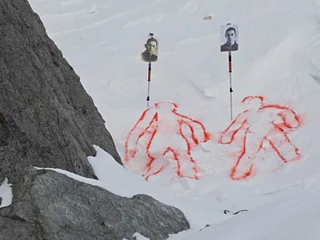

In 1959, a group of nine experienced hikers, led by Igor Dyatlov, set out on an expedition to the Ural Mountains in Russia. They never returned. Their bodies were found months later, scattered in the snow, and the circumstances of their deaths remain unexplained. The tent in which they had been staying was found slashed open from the inside, and the hikers' belongings, including their shoes, were left behind in the snow.
Some of the hikers had severe injuries, including fractured skulls and broken ribs, but there were no signs of an avalanche or struggle. Worse still, one of the bodies was found without eyes, and another had its tongue missing. These bizarre injuries led to numerous theories, including a military cover-up, yet no conclusive explanation has been found. Could it have been a natural disaster, or something more sinister?
The Dyatlov Pass Incident has sparked theories ranging from animal attacks to secret military experiments, or even paranormal explanations such as Yeti sightings or extraterrestrial involvement. Despite multiple investigations, the case remains one of Russia's most enduring and chilling mysteries.
← Back to Explore